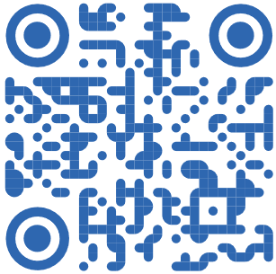

Встреча координаторов и группы ИУ6-12Б
Почти готово
I. Презентация
II. Вопросы и ответы
III. Настолки
Поехали!
Залыгин Вячеслав, ИУ6-33Б
Пешков Дмитрий, ИУ6-13М
Кто мы?
> Студенты-старшекурсники, которые помогают группе адаптироваться к учебе в Бауманке.Что делаем?
> Оперативно отвечают на вопросы, скидывают важную информацию. Координаторы владеют всей необходимой информацией о Бауманке, которая может понадобиться в первое время.Кто это?
> Человек из преподавательского состава кафедры.
Что делает?
> Проводит со старостой и группой смотры успеваемости. Решает организационные вопросы в случае возникновения проблем с учебным процессом.
Кто это?
> Человек из группы. Будет назначен замдеком первого курса.
Что делает?
> Является связующим звеном между преподавателями, деканатом и группой. Следит за посещаемостью группы на парах, передаёт информацию от декана и преподателей группе, организует взаимодействие.
Кто это?
> Человек из группы. Группа сама выбирает своего профорга.
Что делает?
> Является филиалом профкома в группе. 😁 Собирает взносы, информирует людей о мероприятиях и выплатах профкома, организует взаимодействие группы с профкомом.
Кто это?
> Человек из группы. Группа сама выбирает своего культорга (или может даже не выбирать).Что делает?
> Первым узнаёт о самых громких мероприятиях, активно участвует в жизни Art Club BMSTU, помогает ребятам в своей группе вырываться из монотонной учебы и заниматься любимым творчеством.Позволяет получить доступ к электронным сервисам университета.
Позволяет смотреть успеваемость, расписание, результаты сессии. В будущем позволит регистрироваться на физру
Позволяет, внезапно, переписываться! Почтовый ящик закреплен за вами, пока вы учитесь - по студенческой почте можно легко выбивать студенческие лицензии к софту
Кафедральная система электронного образования. Содержит библиотеку методичек, электронные материалы курсов, контакты преподов и многое другое.
Многие учебники доступны онлайн — но вы можете получить и бумажные копии. На сайте можно записаться для посещения библиотеки и узнать, должны ли вы им что-то.
Подключайтесь к сети bmstu_student (логин и пароль вбить на странице идентификации). Сеть есть и в общагах, на кафедре и этажах общаги есть проводной интернет.
Дублирует личный кабинет. Позволяет смотреть успеваемость, расписание, результаты сессии и т.д.
Учеба начинается 1-го сентября, с числителя. Числитель и знаменатель - это как в дроби!.
В семестре 17 недель. В зависимости от четности недели расписание может немного меняться. Числителями называют нечетные недели, знаменателем -- четные.